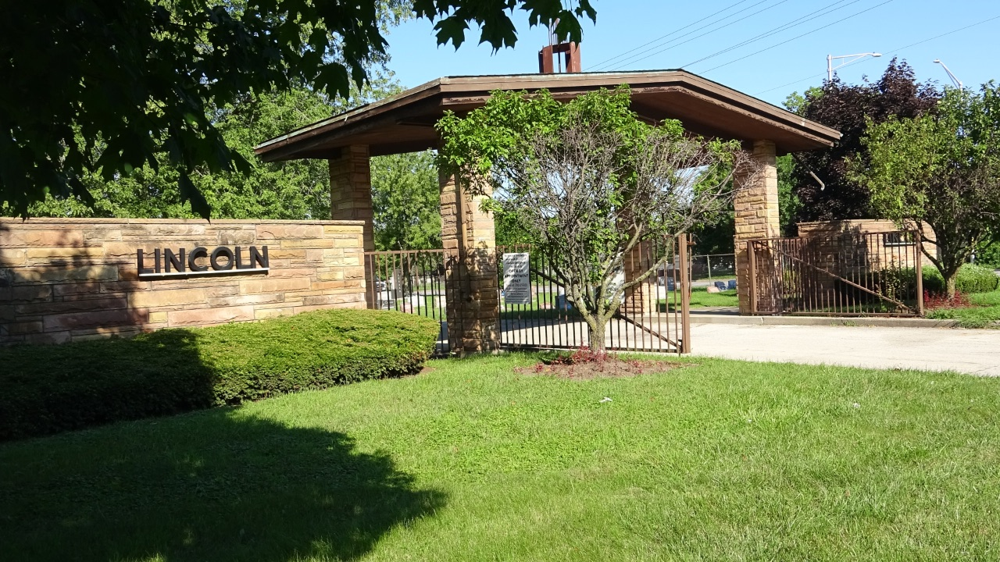

Lincoln Cemetery

Founded in 1911, Lincoln Cemetery is located in Blue Island, Illinois sixteen miles south of Chicago’s Loop. The cemetery is known for famous African American Blues & Jazz musicians, sports figures, and historical figures. Over thirty Blues musicians are buried here including Big Bill Broonzy and Jimmy Reed. Lincoln Cemetery’s address is 12300 South Kedzie Avenue, Blue Island, Illinois, 60655.